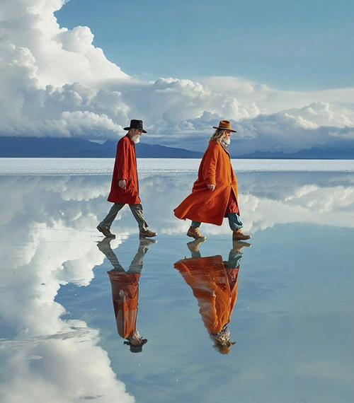

DESTACADO
POTOSÍ
A 7 horas de La PazSALAR DE UYUNI
INFORMACIÓN CLAVE
Extensión
10.582 km²
Altitud
3.656 m.s.n.m.
Duración sugerida
2-3 días
Temperatura
-10°C a 20°C
El salar más grande del mundo, un espectacular desierto blanco de sal que se extiende hasta el horizonte. Durante la temporada de lluvias, se convierte en el espejo natural más grande de la Tierra.
INCLUYE
- Transporte 4x4 privado
- Guía bilingüe certificado
- 2 noches en Hotel de Sal
- Todas las comidas
CONSEJOS DE VIAJE
- Llevar protector solar y lentes
- Ropa abrigada para las noches
- Zapatos impermeables
WiFi
Foto Tour
Pensión Completa
Reserva flexible
Seguro de viaje incluido